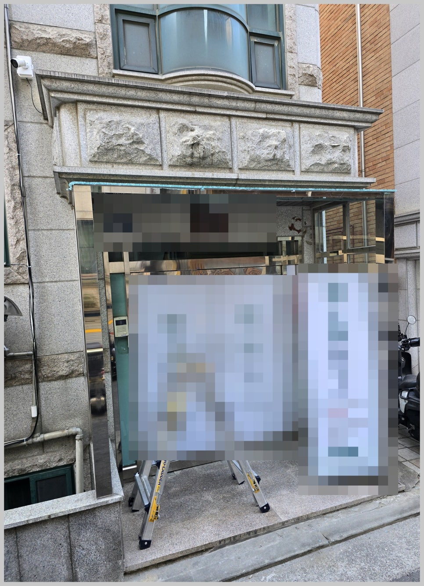
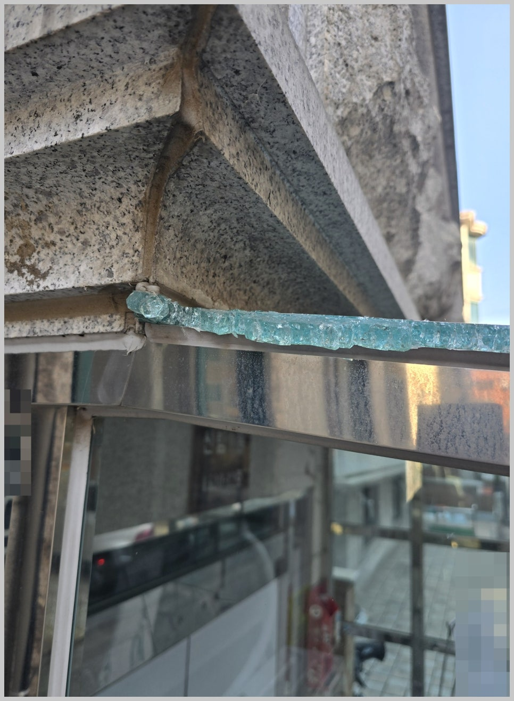
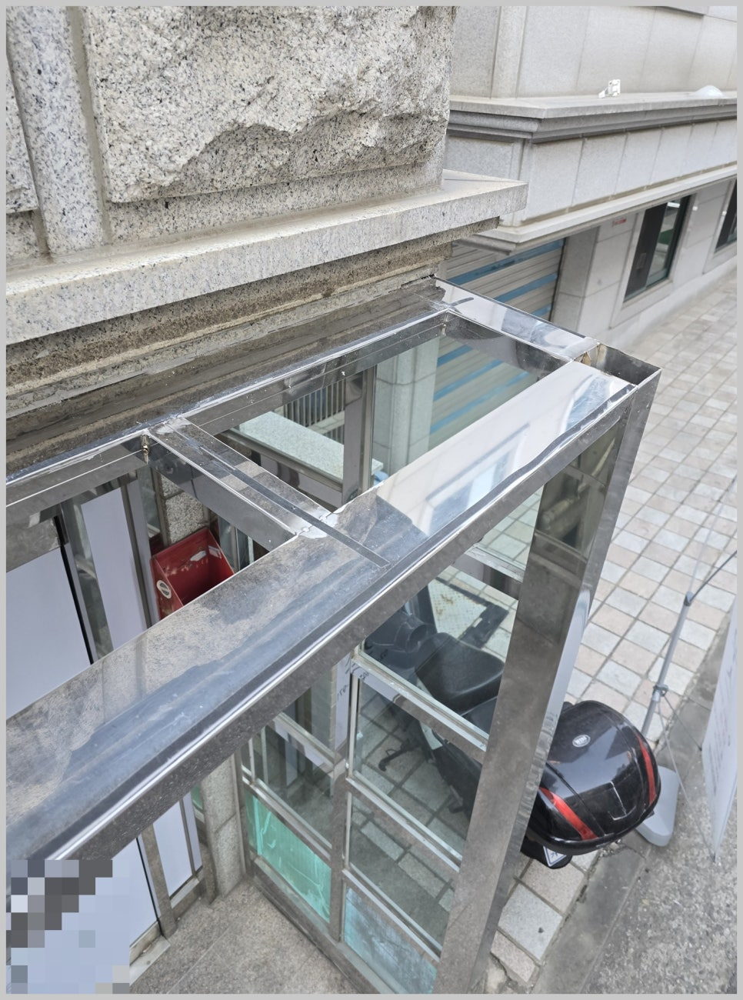

캐노피공사라고 하면 틀부터 새로 세우는 일을 떠올리기 쉽지만, 이번 현장은 유리만 갈아 끼우면 되는 경우였습니다. 서울 관악구의 한 다세대주택 1층 현관 위 유리 덮개가 칸마다 금이 간 채 버티고 있었고, 그 아래로 주민들이 계속 오가고 있었습니다. 틀 상태를 확인한 뒤 판만 전부 바꿨습니다.
한눈에 보기
| 작업 | 현관 위 유리 캐노피의 깨진 판 전체 교체(틀 재사용) |
|---|---|
| 지역 | 서울 관악구(대학동) |
| 장소 | 다세대주택 1층 출입문 위, 건물 모서리 돌출부 밑 |
| 유리 | 강화유리 10T(10mm), 칸별 실측 치수로 공장 강화 후 반입 |
| 틀 | 기존 스텐 틀, 휘거나 흔들리는 곳이 없어 그대로 사용 |
| 소요 시간 | 오후 2시 40분쯤 시작, 4시 50분쯤 덮기 완료 |



강화유리깨짐, 금 간 채 붙어 있으면 괜찮을까요?
강화 처리한 판은 한 군데가 터지면 판 전체가 콩알만 한 알갱이로 갈라집니다. 알갱이들이 서로 물려 한동안 모양을 유지하지만, 바람이나 문을 여닫는 떨림이 쌓이면 어느 순간 한꺼번에 내려앉을 수 있습니다.
알갱이라도 머리 높이 위에서 떨어지면 위험합니다. 교체 날까지는 현관 한쪽을 막거나 눈에 띄는 표시를 해서 바로 밑을 피해 다니게 하는 것이 먼저입니다.
원인은 대개 세 가지입니다. 위층에서 물건이 떨어져 부딪힌 경우, 틀이 틀어져 한 점에 힘이 몰린 경우, 그리고 제조 때 섞인 미세한 불순물이 시간이 지나며 팽창해 저절로 터지는 경우(자파)입니다. 이 현장은 사진만으로 어느 쪽인지 가리기 어려웠지만, 바로 위가 위층 창과 실외기 자리라 낙하물에 노출된 위치였습니다.
이 현장 작업 순서
- 틀이 휘었는지, 고정부가 흔들리는지 먼저 봤습니다. 뒤틀린 곳이 없어 틀은 남기기로 했습니다.
- 바닥에 깔개를 펴고 현관 통행을 잠시 막은 뒤, 칸 하나씩 금 간 판을 걷어 냈습니다.
- 판이 얹혀 있던 받침 둘레의 묵은 실리콘과 유리 알갱이를 깨끗이 닦았습니다. 작은 조각 하나만 끼어 있어도 새 판이 그 점에 눌려 다시 터질 수 있기 때문입니다.
- 미리 잰 치수로 공장에서 강화해 둔 10mm 판을 싣고 와 칸마다 맞춰 얹었습니다.
출입구캐노피 공사 동안 현관을 못 쓰나요?
강화 처리한 유리는 현장에서 자르거나 구멍을 낼 수 없어, 실측을 먼저 하고 공장 주문을 넣어 두는 방식으로 진행합니다. 그래서 작업 당일에는 떼고 얹는 시간만 통행을 막으면 됩니다.
사진 기록으로 보면 이 현장은 오후 2시 40분쯤 깨진 모습을 찍고, 3시 30분쯤 판을 다 걷어 낸 뒤, 4시 50분쯤 새 판을 모두 덮었습니다. 반나절이 안 걸린 셈입니다.
머리 위가 더 걱정된다면 두 장 사이에 필름을 넣은 접합유리도 있습니다. 깨져도 조각이 필름에 붙어 남지만 무겁고 값이 오르니, 지금 틀이 그 무게를 견디는지부터 봅니다.
캐노피공사 비용은 무엇으로 정해지나요?
가장 큰 변수는 칸 수와 한 칸 크기입니다. 칸이 많고 판이 넓을수록 유리값과 들어 올릴 사람 손이 함께 늘어납니다.
다음은 높이입니다. 이 현장처럼 1층 현관이라 사다리로 닿으면 별도 장비가 필요 없지만, 2층 이상이거나 밑이 계단이면 작업대 같은 장비가 더해집니다. 마지막으로 강화 한 장으로 할지 접합유리로 할지에 따라 값이 갈립니다. 정해진 표 대신 사진과 대략적인 치수를 보고 안내해 드립니다.
자주 묻는 질문
- Q. 틀까지 새로 바꿔야 하나요?
- 틀이 휘지 않았고 고정된 부분이 흔들리지 않으면 유리만 바꿉니다. 이 현장도 스텐 틀에 뒤틀림이 없어 그대로 다시 썼습니다.
- Q. 강화유리는 깨지면 어떻게 갈라지나요?
- 날카로운 큰 조각 대신 작은 알갱이로 부서집니다. 같은 두께 일반 유리보다 몇 배 단단하지만, 한번 금이 가면 판 전체를 바꿔야 합니다.